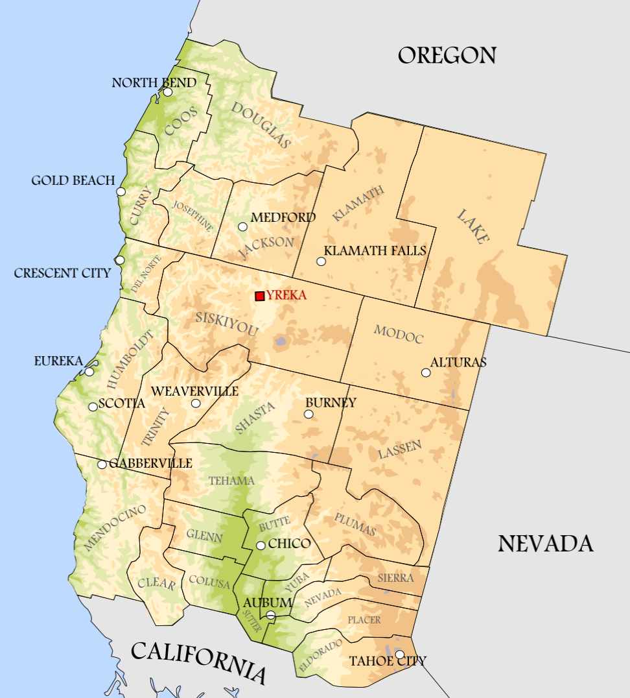

We Are
Named after Thomas Jefferson, the State of Jefferson is a proposed additional state within the continental United States of America. When President Jefferson sent Lewis and Clark on their famed exedition, he did so with a vision of a 'Republic of the Pacific'. The territory was eventually incorporated into what would become southern Oregon and northern California. However the areas between the two states are very different from the population centers and political capitals of each state.
Beginning in 1941 with Mayor Gilbert Gable of Port Orford, there have been many attempts to segment the territory into a proposed 51st state within the union. The land is more rural and has political and economic differences compared to it's neighboring counties in Central Oregon or Southern California, and these differences have only increased in recent years. The proposal would include 27 counties with a total land area of 83,786 square miles of beautiful, well-preserved land. It would allow for the people of these counties to better represent themselves legally and politically.
To give the people of Jefferson the represenation, freedom, and independence as intended in the Constitution of the United States of America